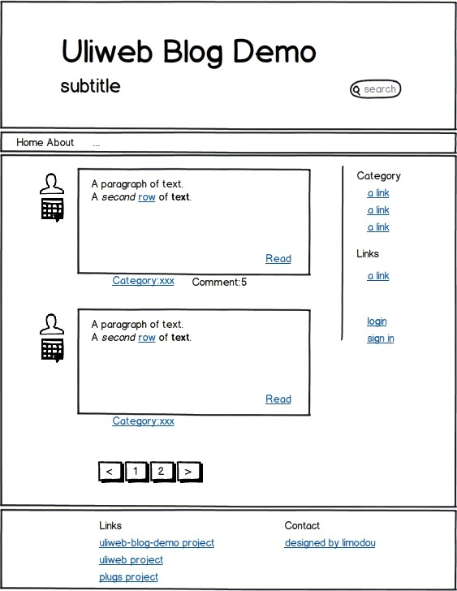
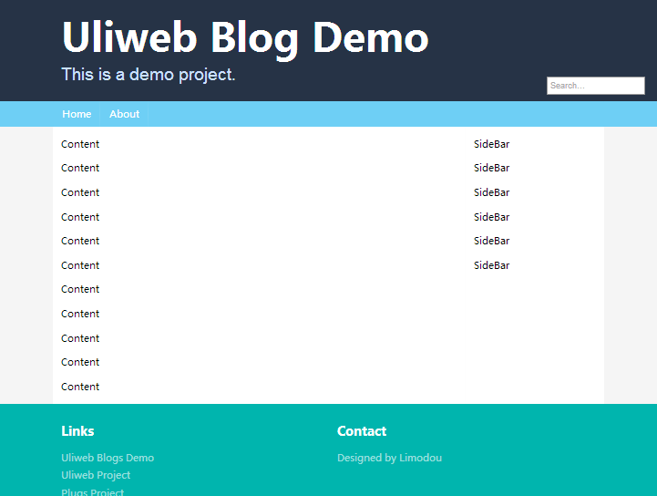

全局设计¶
界面布局¶
一个典型的应用，根据用户不同，一般分为：普通用户和系统用户。当然，我们可以根据 实际情况进行更细的划分。因此界面也可以分为普通界面和管理界面。不同的页面它们的 风格应该是统一的，因此一般会考虑将界面通用部分放到统一的模板中，然后具体的页面 分别从这些模板继承。因此对于我们这个项目，我们将创建两个父模板： layout.html 和 admin_layout.html, 分别对应一般页面和管理页面。
界面设计是一件复杂而又相对专业的工作，现在已经有不少优秀的开源CSS框架可以让我们 直接使用，常见的有 Bootstrap, Semantic-UI, Fundation. 这里我选择Semantic-UI这个css框架。
创建 APP¶
创建 home, admin 和 semantic APP¶
让我们分别创建 home 和 admin 这两个app，其中 home 用来存放普通用户使用的全局性的 内容，包括整站的CSS，JS和模板。而 admin 用来存放后台管理使用的全局性的内容。
为了存放semantic的静态资源，同时创建semantic app。
cd uliweb_blogs
uliweb makeapp home
uliweb makeapp admin
uliweb makeapp semantic在uliweb 0.2.4版本之后，还可以使用 uliweb makeapp home admin semantic 一次性 创建多个app。
配置 APP¶
App创建之后，需要在 apps/settings.ini 中进行配置，如现在的 settings.ini 内容是：
[GLOBAL]
DEBUG = False
DEBUG_CONSOLE = False
DEBUG_TEMPLATE = False
#INSTALLED_APPS = [
# 'uliweb.contrib.staticfiles',
# 'uliweb.contrib.template',
# 'uliweb.contrib.upload',
# 'uliweb.contrib.orm',
# 'uliweb.contrib.session',
# 'uliweb.contrib.cache',
# 'uliweb.contrib.auth',
# 'uliweb.contrib.i18n',
# 'uliweb.contrib.flashmessage',
# ]前三个 DEBUG* 是与调试相关，在 local_settings.ini 又重新定义为了 True (DEBUG_TEMPLATE) 除外。其目的就是：当部署时，这些开关项不生效。但是在本地调试时生效。
INSTALLED_APPS 是最重要的用来设置哪些 App 生效的配置。在Uliweb中，App可以是任何 合法的python包，因此可以引入第三方的App。在配置的时候，需要使用字符串的表示形式， 它表示这个App的导入路径。例如 uliweb.contrib.orm 表示，在启动应用时，Uliweb可以 直接导入 uliweb.contrib.orm 这个包。
上面这个是自动生成，已经列出了常见的一些App，只不过全部注释掉了，因此我们根据需要 去掉一些注释，并且将我们新建的App添加在后面。因此上面的代码改为：
INSTALLED_APPS = [
'uliweb.contrib.staticfiles',
'uliweb.contrib.template',
'uliweb.contrib.upload',
'uliweb.contrib.orm',
'uliweb.contrib.session',
# 'uliweb.contrib.cache',
'uliweb.contrib.auth',
'uliweb.contrib.i18n',
# 'uliweb.contrib.flashmessage',
'semantic',
'home',
'admin',
]其中：
uliweb.contrib.staticfiles用来处理静态文件uliweb.contrib.template用来处理 use, link 标签uliweb.contrib.upload用来处理文件上传下载uliweb.contrib.orm用来处理数据库的ORMuliweb.contrib.session用来处理sessionuliweb.contrib.cache用来处理cache，暂时用不上uliweb.contrib.auth用来定义用户相关的表及用户认证uliweb.contrib.i18n用来进行国际化处理uliweb.contrib.flashmessage用来实现静态化的flash信息显示，暂时不用
有的时候，App的顺序很重要。因为Uliweb的一些机制，如：配置文件导入顺序，模板查找， 静态文件查找等都和顺序有关系。例如，两个App可能有重名的模板，那么Uliweb会最终使用 排列在最后那个App的模板， 即后定义的会覆盖前面的同名资源 。
这种机制还可以允许用户定义第三方的App，以替換原来的App的实现，以实现新的功能。
所以，建议是把Uliweb内置的App放在最前，第三方的App放在中间，自定义的放在最后。
向 semantic App 添加资源¶
拷贝文件¶
为什么不直接把semantic的静态资源直接放到 home 或 admin 中呢？就是因为想要复用。
访问 semantic-ui 的 github 页面， 可以直接下载 zip 文件或 clone 这个项目。找到其中的 build\packaged 子目录。将 其拷贝到 semantic/static/semantic 目录下。注意，semantic 要创建，原来是没有的。
通常，与app相关的静态资源，我都会在static目录下创建与app同名的子目录，将静态文件 放在这个目录下，主要是防止在进行静态文件抽时，万一有同名的文件会进行覆盖，而放在 不同的子目录下就可以避免这个问题。
删除 semantic/views.py 文件¶
因为semantic app只是用来存放静态文件，所以并不需要 views.py，因此我们把它删除。
创建 use 配置¶
uliweb.contrib.template app提供了在模板中可以使用的use标签，可以方便引用静态文件。 具体的详情可以参见 template app。use 内容的定义可以使用 .py 文件和配置文件两种方式。这里我们简单使用配置文件的方式。
在 semantic app下创建 settings.ini ，然后输入：
[TEMPLATE_USE]
semantic = {
'toplinks':[
'semantic/css/semantic.min.css',
'semantic/javascript/semantic.min.js']
}那么，当我们在模板中使用 {{use semantic}} 时，Uliweb在渲染模板时，会将它替換 成：
<link rel="stylesheet" type="text/css" href="/static/semantic/css/semantic.min.css"/>
<script type="text/javascript" src="/static/semantic/javascript/semantic.min.js"></script>可以看到， css 和 js都生成了正确的链接形式。同时它会自动添加到Html页面中的 </head> 之前。而不是定义的地方。
理解这一点很重要，这样你就可以在模板中的任何地方使用 {{use}} 。use的使用顺序 也是要注意的，因为有些静态文件是有依赖如，如 jquery 的一些插件。所以要先引用 jquery ，然后才是其它的插件。所以 jquery 这样的就要写在前面。
除了 use 还有一个只能引用一个文件的标签 link 。它可以引入 static 下的一个静态 文件并正确处理 css 和 js。如：
{{link "home.css"}}将生成：
<link rel="stylesheet" type="text/css" href="/static/home.css"/>link 也会将生成的链接自动插入到 </head> 之前。
静态URL的生成¶
从上面生成的链接可以看出，静态文件前面都是以 /static/ 开始的，这主要是为了后 面部署到web server时更方便，并且可以规范项目结构，所以在app下的模板文件要放在 templates 目录下，也是一个道理。
如果你希望将链接插入到当前位置，而不是自动插入到 </head> 之前，那么可以这样处理：
<link rel="stylesheet" type="text/css" href="{{=url_for_static('home.css')}}"/>通过调用 {{=url_for_static(filename)}} 来生成路径，不过这里 filename 是一个相对 路径。同时你要手工生成完整的链接。
url_for_static() 是在配置了 uliweb.contrib.staticfiles 这个app之后自动注入到 模板中的，所以可以直接使用。
引入 jquery¶
不过 semantic 还需要 jquery 才可以使用，因此我们还需要配置 jquery。在plugs项目 中已经包含了 jquery ，所以我们可以直接使用它。
使用第三方包其实有两种办法，一种是在 apps/settings.ini 中的 INSTALLED_APPS 中进行配置，另一种是通过Uliweb提供的App依赖。第一种当别人复用你的app时，也要同 样对 settings.ini 进行配置。第二种则会在复用你的app时，自动引入依赖的app。所以 这里为了以后方便使用semantic app，使用第二种定义方法。
在 semantic app下定义 config.ini，内容如下：
[DEPENDS]
REQUIRED_APPS = [
'plugs.ui.jquery.jquery',
]有了这个依赖，我们就不需要去修改 apps/settings.ini 了。
但是在模板中使用 jquery 还不够。在 plugs.ui.jquery.jquery 中也提供了 {{use jquery}}, 不过，我们要显示地调用才可以。如果想省事，我们可以修改 TEMPLATE_USE/semantic 的 定义，改为：
[TEMPLATE_USE]
semantic = {
'toplinks':[
'semantic/css/semantic.min.css',
'semantic/javascript/semantic.min.js'],
'depends':['jquery'],
}这里用到了 use 定义中的依赖处理，意味着，我们在 {{use semantic}} 时，会自动加 入 jquery 的链接。
修改jquery的版本¶
有些plugs中与UI相关的app，因为版本比较多，所以提供了对版本的设置支持。象jquery 就是一例。在plugs中缺省的jquery版本号是 1.7.2, 所以，如果你想使用其它的版本， 如 1.9.1 可以在 semantic/settings.ini 中定义：
[UI_CONFIG]
jquery_version = '1.9.1'创建 layout.html¶
修改 home, admin 的views.py¶
因为使用 makeapp 创建app时，会自动生成一个 views.py，它会缺省生成 / 的view函数, 所以会产生冲突，因为有两个 /。让我们把 admin/views.py 中的代码先注释掉，不让 它生效，如：
#@expose('/')
#def index():
# return '<h1>Hello, Uliweb</h1>'然后把 home/views.py 中的views.py改为：
@expose('/')
def index():
return {}让它返回一个 dict 数据，这样就可以自动套用模板了。
自动套用模板是Uliweb的机制，当view函数（指使用 @expose 修饰的函数或类方法）返 回数据为dict时，Uliweb会自动根据是一般函数或是类方法来自动使用模板。模板名将与 函数名相同。如果是类方法，则模板映射为 ClassName/FunctionName.html 的文件名。
创建 index.html¶
index() 对应的模板文件是 index.html ，所以先让我们创建 home/templates/index.html 文件，内容为：
{{extend "layout.html"}}extend 说明 index.html 模板将从 layout.html 进行继承。
首页和具体的blog展示页面可能有所不同，首页一般是信息的聚合，而每个blog只会展示 单篇文章。并且首页会有banner，可能设计得更好看。这里我们先留成空的，等后面细化时 再进行修改。
创建 layout.html¶
其实，如果不使用象 semantic 这样的css框架，我们还可以选择参考一些别人设计好的 展示页面，有一些免费的模板可以下载。然后根据模板的内容，将需要动态生成的使用模 板变量和block进行处理，以便与view提供的数据进行结合。
这里我们将从头设计展示页面，但是和你改造一个现成的页面是类似的。
我先简单设计一下，我想象中的首页大概是这样的：

其中，最上面的头，菜单以及最下面的页脚可以看成是比较通用的，因此我们的layout就 可以主要包含这里内容，而其它的内部只留出空间，让子模板来继承并覆盖即可。
内容比较长，所以让我们一段段看：
<!DOCTYPE html>
<html>
<head>
<meta http-equiv="Content-type" content="text/html; charset=utf-8" />
<title>{{=settings.HOME.title}}</title>
</head>
{{use "semantic"}}
{{link "home.css"}}
<body>这是Html的头部分，其中 title 的值使用了模板语法, {{=settings.HOME.title}} 表示 从settings中获取 HOME 下的 title 值。
在模板中可以直接使用settings中定义的配置项。为了方便修改，有些值是写到settings中 去了，如： title, name, site, description。
然后模板中还使用了 use 和 link ，关于 use 和 link 的使用，前面已经说过了。
我把 layout.html 中相关的自定义 CSS 都写在了 home.css 中，就不再细说了。
<!-- Header -->
<div class="ui page grid" id="introduction">
<div class="column">
<h1 class="ui header">{{=settings.HOME.name}}
<h2 class="sub header">{{=settings.HOME.description}}</h2>
</h1>
<form action="http://www.google.com/search" method="GET">
<input name="sitesearch" value="{{=settings.HOME.site}}" type="hidden">
<input id="search_bar" name="q" type="text" placeholder="Search..."></input>
</form>
</div>
</div>这是Banner的定义，使用了 settings 中定义的 name (即应用名称) 和 description (应 用描述)。同时还添加了一个搜索框，使用google来搜索。为了限制在当前网站，所以还 使用了 settings 中的 site 。所以你要在settings中定义这些值。
<!-- Menus -->
<div class="ui page grid" id="menus">
<div class="ui blue inverted menu">
<a href="/" class="item">Home</a>
<a href="/about" class="item">About</a>
</div>
</div>这里定义了一个菜单，目前只有两项，并且没处理活动菜单的高亮。
<!-- CONTENT -->
{{block content_container}}
<div class="ui page grid">
<div class="ui divided grid" id="blogs">
<div class="twelve wide column">
{{block content}}
<p>Content</p>
<p>Content</p>
<p>Content</p>
<p>Content</p>
<p>Content</p>
<p>Content</p>
<p>Content</p>
<p>Content</p>
<p>Content</p>
<p>Content</p>
<p>Content</p>
{{end}}
</div>
<div class="four wide column">
{{block sidebar}}
<p>SideBar</p>
<p>SideBar</p>
<p>SideBar</p>
<p>SideBar</p>
<p>SideBar</p>
<p>SideBar</p>
{{end}}
</div>
</div>
</div>
{{end}}这里定义了三个block(块)： content_container, content 和 sidebar 因此你可以在子模 板中覆盖它们的内容，并且 content_container 包含了其它两个block。
<!-- FOOTER -->
<div class="ui page grid" id="footer">
<div class="column">
<div class="ui two column stackable grid">
<div class="column">
<div class="ui header">Links</div>
<div class="ui inverted link list">
<a target="_blank" class="item" href="http://github.com/limodou/uliweb-blogs-demo">Uliweb Blogs Demo</a>
<a target="_blank" class="item" href="http://github.com/limodou/uliweb">Uliweb Project</a>
<a target="_blank" class="item" href="http://github.com/limodou/plugs">Plugs Project</a>
</div>
</div>
<div class="column">
<div class="ui header">Contact</div>
<div class="ui inverted link list">
<a target="_blank" class="item" href="mailto:limodou@gmail.com">Designed by Limodou</a>
</div>
</div>
</div>
</div>
</div>
</body>
</html>这里定义了页脚。
上面元素中使用的是semantic的定义方式，具体的涵义不是本教程的重点，所以不细说了。
添加配置信息¶
前面在模板中用到了 settings.HOME 中的一些值，所以让我们在 apps/settings.ini 中定义它。你也可以定义在 home/settings.ini 中，不过它更多是关于应用本身，所以 一般就放在了 apps/settings.ini 下了。在文件最后添加：
[HOME]
title = 'uliweb blog demo'
name = 'Uliweb Blog Demo'
description = 'This is a demo project.'
site = 'http://limodou.github.com/uliweb-doc'其中site是用来实现站内搜索的，所以应该改成你所用的网站地址。
测试效果¶
到这里，我们可以先看一下我们已经实现的成果。
在 uliweb_blogs 目录下运行 :
uliweb runserver这样就启动了开发服务器，并且可以看到日志输出是带有颜色的。如果不想要颜色输出，可以添加 --nocolor 参数。 输出结果大概是这个样子：
[INFO] * Loading DebuggedApplication...
[INFO] * Running on http://localhost:8000/
[INFO] * Restarting with reloader
[INFO] * Loading DebuggedApplication...说明启动成功，并且自动启动了Debug调试功能。根据提示，我们打开浏览器，输入地址 http://localhost:8000/ ，如果运行正确的话，这里我们会看到：

关于开发服务器¶
Uliweb的开发服务器在缺省情况下可以自动探测代码的变化，然后自动重启。所以通常情况 下，你只要修改，然后刷新页面就可以了。不过有些情况要特别注意：
- 修改了模板文件，因为它不会缓存到内存，所以服务器不会重启，但是会立刻生效
- 添加新的文件，如模板，views.py等，因为Uliweb在启动时会对文件名进行记录，所以 新増文件由于没有记录，所以不会自动重启。需要手工重启。
关于命令行¶
Uliweb的命令行在只输入 uliweb 时会显示可用命令及全局的参数，并且会根据配置的 app来显示app下可用的使用。所以，配置不同的app，可能可以使用的命令是不同的。
如果想查看详细的命令，可以输入：
uliweb help command